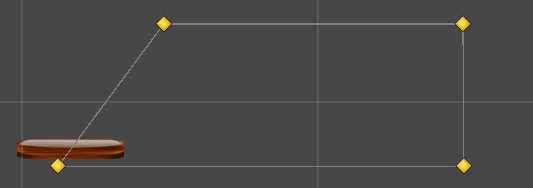
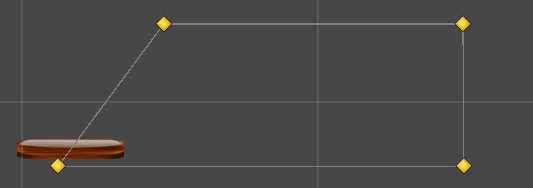

Yatsomi
Im developing a 2D game. How can i create some animations like this? Can it achieve it in the editor?
Im mean creating keyframes in a timeline for node attributes like position or location.

Im developing a 2D game. How can i create some animations like this? Can it achieve it in the editor?
Im mean creating keyframes in a timeline for node attributes like position or location.


I have not used this feature myself, but a SplinePath seems the way to go:
Tnx man. So there is no way to create some keyframes in a visual timeline? i think i should add it to editor myself though im not familiar with such a thing.

Have to checked out attribute animation?
Hm, indeed that may be alot simpler yet sufficient.
Yes i did, but some animations should be created visually. I mean consider making something like this using 3 sprite node:

Each sprite needs to rotate and positioned by hand. Also a box collider that its size change while the platforms unfold. Im developing a 2D platformer game and i need mechanics like this a lot. Its so hard to do this in code. Any suggestion?

It’s not hard to do in code.
You are rotating and translating.
Once you try a few to see what’s going on, you’ll see how easy it is.
Also, you can readily animate using Actions. The urhosharp guys describe them. And they may have been ported into C++ already.
You could just apply your custom action to the nodes and get much better result than animating in a framewise manner. Often your custom action can just be a couple few existing actions applied in sequence or parallel.
So from #1 to #2, you rotated round a point. To #3 you translated along an axis then rotated around a point. To #4 you rotated around a point as is #5-#7.
Here’s a discussion about them, but don’t know the end result. But once you understand the base code behind actions, to animate, you’ll see how easy it all is.
You can either use SplinePath as originally proposed by Modanung if your animation path is organic in nature or just based on some artistic impression; Or use the attribute animation if your animation is more mechanical or clockwork in nature. The former approach allows you to use the Editor to visualize and modify the path interactively. The latter approach does not have Editor support at the moment, I believe. Having said that, I think the value/object animation keyframe definition XML file can be easily generated using a small external util program. It should not be only faster to get it done, but also should produce more accurate result, IMHO.
Depending on the situation you could also use skeletal animation for this purpose.
Thanks for the answer sir. I’m familiar with the actions and have no problem implementing it, but after that, animations should be create in code. As i said my problem is lack of a visual tool to create animations.
Thanks sir. I think your latter approach to use XML file will solve my problem. Do you have any external program in mind to doing that? I will start searching for it.
Thanks sir. you mean using something like Spriter? I think @weitjong solution to use exported XML animation from an external software is more efficient. But Spriter could work too. I will test both solutions and share the results.
The related documentation is quite scarce, but you can always turns to C++ implementation source code for clue. You can actually choose between XML format or JSON format as the animation resource definition file.
For ValueAnimation:
For ObjectAnimation:
The documentation does show how to load such resource file, however. If done correctly, perhaps you can reuse the same animation file for the grouping node (containing two sprite node) and for the individual node.
I don’t know any of the external tool out there that can readily generate the resource file in these formats. These are anyway very Urho-specific format, but who knows you will be lucky to find one in your search. If I were you though, I would probably just use Ruby/Perl/Python/JS script to generate the JSON file myself. Isn’t it just simple rotation? So, a simple sine wave function can do the trick, no?
Maybe its a simple rotation yeah, but its just an example to explain what i need. I have multiple mechanics that some of them have location, rotation and scale changes over the time and creating that effect through the code is just not efficient and not the right way in my opinion. If there was a visual animator tool, they could be easily created. There is no such a thing in the urho editor so i think searching for a program to export animation with XML or JSON will be the best option though they need to be changed in a way that urho can read them.
I just have an idea. I haven’t tried it myself. It is plausible that you still can use our current Editor to visualize the animation, but using other tool to modify the animation resource file. The Editor uses a file watcher, so it auto reloads the resource when its content changes externally. The Editor has a minimalist quake-like console where you can enter AS or LUA command. So, in theory you could invoke the animation resource load/save scripting API from the console window. Once the scene is setup, use the play button in Editor to play the value/object animation. Use external file editor to alter the key frame or add new one, and our Editor should reflect the changes interactively. Again, this is just an idea before my morning coffee and untested yet. So I wish you good luck.
I just wanna say thank you for being so helpful and responsive. I’m searching for the external tool and will test your idea as soon as i can.